<!DOCTYPE html>

<html lang="en">

<head>

    <meta charset="UTF-8">

    <meta name="viewport" content="width=device-width, initial-scale=1.0">

    <link rel="stylesheet" href="https://code.jquery.com/mobile/1.4.5/jquery.mobile-1.4.5.min.css">

    <!--themes-->
    <link rel="stylesheet" href="themes/themes.css">
    <link rel="stylesheet" href="themes/themes.min.css">
    <link rel="stylesheet" href="themes/jquery.mobile.icons.min.css">

    <!--jQ-->
    <script src="https://code.jquery.com/jquery-2.1.1.min.js"></script>

    <script src="https://code.jquery.com/mobile/1.4.5/jquery.mobile-1.4.5.min.js"></script>

    <!--google front-->
    <link href="https://fonts.googleapis.com/css2?family=Noto+Sans+TC:wght@900&display=swap" rel="stylesheet">
    
    <!--icon-->
    <link rel="shortcut icon" href="images/icon.ico" type="image/x-icon">
    <link rel="icon" href="images/icon.png" type="image/x-icon">

    <style>
        #home img{
            max-width: 100%;
        }
        #page01 img{
            max-width: 100%;
        }
        #page02 img{
            max-width: 100%;
        }
        #page03 img{
            max-width: 100%;
        }#page04 img{
            max-width: 100%;
        }
        #about img{
            max-width: 100%;
        }
        .ui-body-c, .ui-header {
            font-family: 'Noto Sans TC', sans-serif;
        }
        .ui-footer {
            font-family: 'Noto Sans TC', sans-serif;
        }
        .video-wrapper{
            position: relative;
            padding-bottom: 56.25%;
            overflow: hidden;
        }
        .video-wrapper iframe{
            position: absolute;
            top: 0;
            left: 0;
            width: 100%;
            height: 100%;
        }

    </style>
    <title>宜蘭輕鬆旅遊趣</title>

</head>

<body>
    <!--首頁-->
    <div data-role="page" id="home">

        <div data-role="header">

            <h1>宜蘭輕鬆旅遊趣</h1>

        </div><!-- /header -->

        <div role="main" class="ui-content">

            <h2>宜蘭3天2夜</h2>

            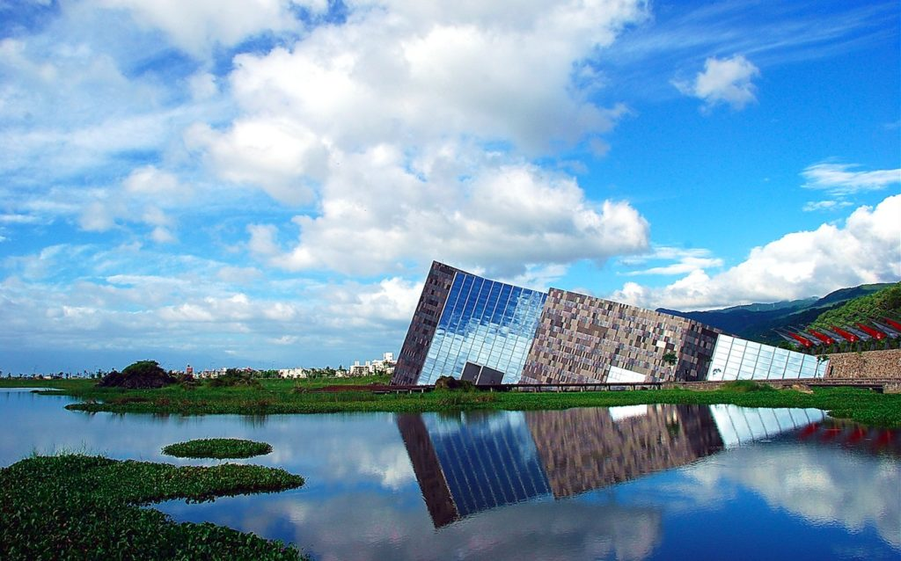

            <u1 data-role="listview" data-inset="true">

                <li><a href="#page01" data-transition="slidefade">
                    
                    <h2>特色景點</h2>
                    <p>宜蘭景點:.............</p>
                </a></li>
                <li><a href="#page02" data-transition="slidefade">
                    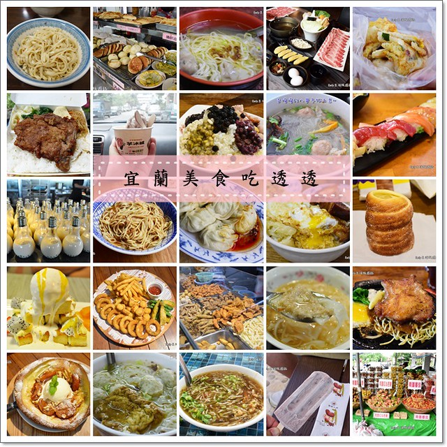
                    <h2>在地美食</h2>
                    <p>美食是讓我們</p>
                    </a></li>
                <li><a href="#page03" data-transition="slidefade">
                    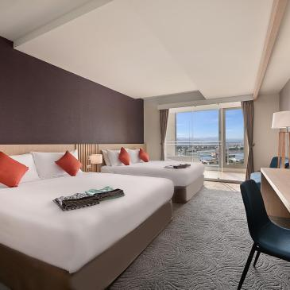
                    <h2>住宿飯店</h2>
                    <p>飯店推薦:........</p>
                </a></li>
                <li><a href="#page04" data-transition="slidefade">
                    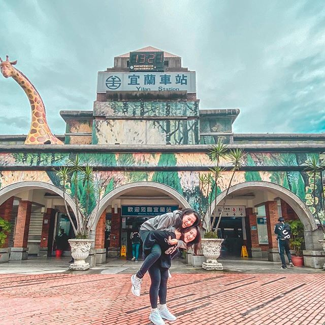
                    <h2>交通資訊</h2>
                    <p>交通方式:...........</p>
                </a></li>
                <li><a href="#about">關於我們</a></li>
            </u1>

        </div><!-- /content -->
    
        <div data-role="footer" data-position="fixed">
            <h4>copyright &copy; 2020 Wenzao DCAM Vicky</h4>

        </div><!-- /footer -->

    </div><!-- 首頁 -->

    <!--第一分頁特色景點-->
    <div data-role="page"  id="page01">

        <div data-role="header">
            <a href="#home" class="ui-btn ui-icon-home ui-btn-icon-notext ui-btn-corner-all">home</a>
            <h1>宜蘭輕鬆旅遊趣</h1>
            

        </div><!-- /header -->
        <div role="main" class="ui-content">

            <h2>~宜蘭知名景點~</h2>

            <div data-role="collapsibleset" data-theme="a" data-content-theme="a">
                <div data-role="collapsible">
                    <h3>鳳梨屋水上莊園</h3>
                    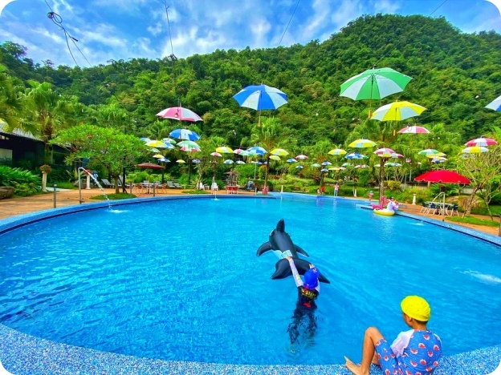
                <p>介紹:腹地廣大的五星級露營區中，佈置了許多網美場景，有夢幻水濂瀑布盪鞦韆、浪漫的月亮躺椅、大鳳梨造型泳池、更能乘著透明獨木舟漂浮在湖泊上享受午後時光，最棒的四周被森林與山嵐給包圍，盡享大自然美景，夜晚時還會舉辦絢麗的煙火秀喔！</p>
                <p>鳳梨屋水上莊園地址：宜蘭縣員山鄉長嶺路195號</p>
                </div>
                <div data-role="collapsible">
                    <h3>蘭陽博物館</h3>
                    
                <p>介紹:除了展覽豐富，館內也有不少美麗的拍照場景，像是館中的天空步道，館外的天空之鏡倒映著藍天，正前方的濕地公園也是練拍風景照的好地方，重點！不管是晴天還是雨天都能來，最近新登場了親子考古沙坑，更是大大的有趣。</p>
                <p>蘭陽博物館營業時間：09:00-17:00 (星期三公休)</p>
                <p>蘭陽博物館地址：宜蘭縣頭城鎮青雲路三段750號</p>
                </div>
                <div data-role="collapsible">
                    <h3>心花鹿Fun</h3>
                    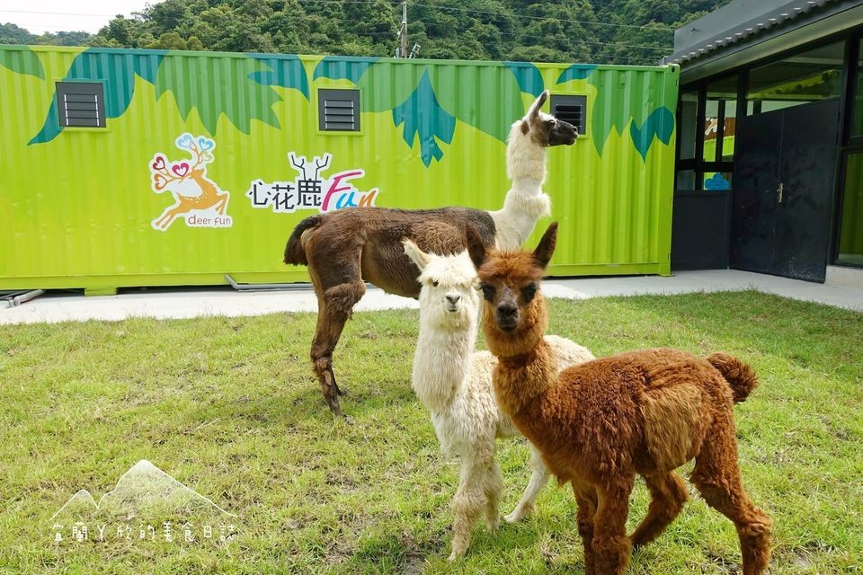
                <p>介紹:現在不用飛去日本，直接在各地都能餵到梅花鹿，好像農場沒養個梅花鹿就不叫農場，而最新的梅花鹿農場就在宜蘭梅花湖畔，裡面還有可愛羊駝等著你來一起互動餵食。</p>
                <p>心花鹿Fun營業時間：早上10點到下午五點半</p>
                <p>心花鹿Fun地址：宜蘭縣冬山鄉大埤一路199號</p>
                </div>
                <div data-role="collapsible">
                    <h3>伯朗咖啡城堡</h3>
                    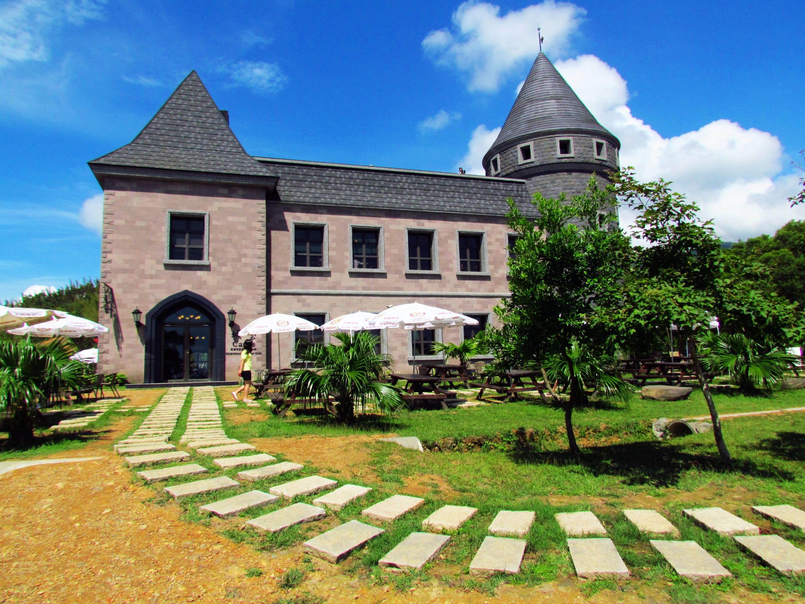
                <p>介紹:宜蘭免門票景點「金車伯朗咖啡城堡」，宜蘭伯朗咖啡館一館、二館是到頭城喝咖啡必訪，除了好停車，更能遠望宜蘭海景與前方龜山島面貌，而且充滿異國風情的城堡，完全好拍到爆炸</p>
                <p>伯朗咖啡城堡地址：宜蘭縣頭城鎮石空路95號</p>
                <p>營業時間：08:00-18:00</p>
                </div>
                <div data-role="collapsible">
                    <h3>吉姆老爹啤酒工場</h3>
                    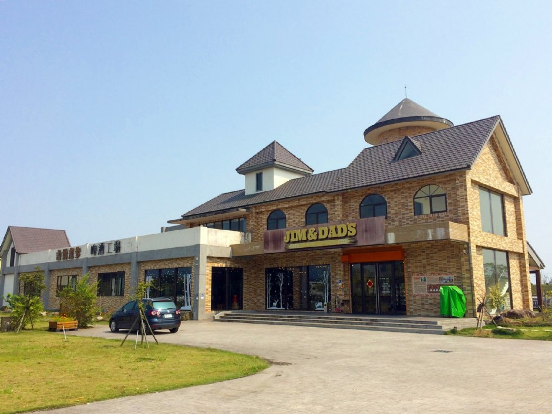
                <p>介紹:吉姆老爹啤酒工場致力於推廣會回甘的招牌美系啤酒花艾爾，也同時使用在地素材，創造屬於台灣的精釀啤酒。從使用台灣小麥釀製的宜蘭騎士小麥白艾爾，一直到許多的水果和辛香啤酒(柚子，金棗，百香果，薑，馬告等等)，吉姆老爹致力釀出更好喝，也更具特色的精釀。也因如此，吉姆老爹啤酒工場是台灣精釀界最令人期待的酒廠之一。</p>
                <p>吉姆老爹啤酒工場地址：宜蘭縣員山鄉員山路二段411號</p>
                <p>時間：09:30-17:00 (週二公休)</p>
                </div>
                <div data-role="collapsible">
                    <h3>忍者村</h3>
                    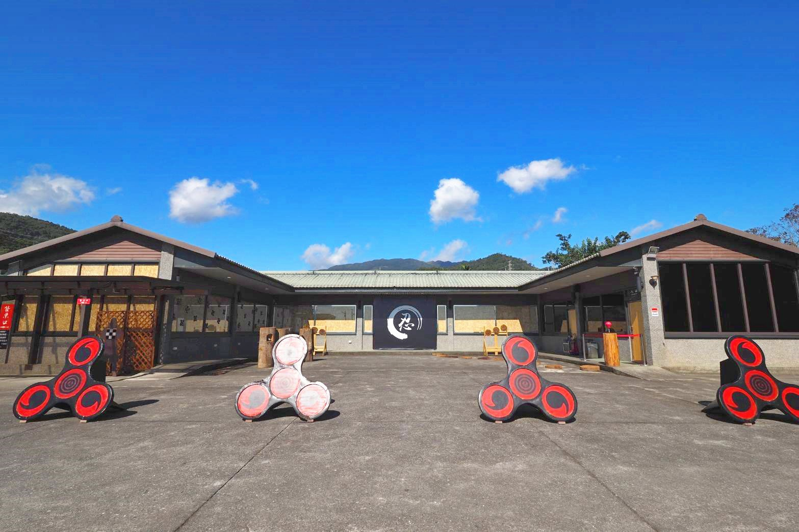
                <p>介紹:全台首創忍者關卡，設計了體驗忍者武器與技能，看你要飛簷走壁、手裏劍、迴旋踢全都行，而且聽說忍者陀陀螺是忍者村的師父，他是一隻熊貓，教導大家「旋轉忍術」，想變忍者不用飛日本，現在宜蘭就能玩到囉～</p>
                <p>忍者陀陀螺地址：宜蘭縣礁溪鄉匏杓崙路95-6號</p>
                <p>營業時間：9:00～17:00(4:20最後售票)/每星期三公休一天</p>
                <p>門票：平日200元／假日220元／博愛票125元</p>
                </div>
                <div data-role="collapsible">
                    <h3>礁溪夜市</h3>
                    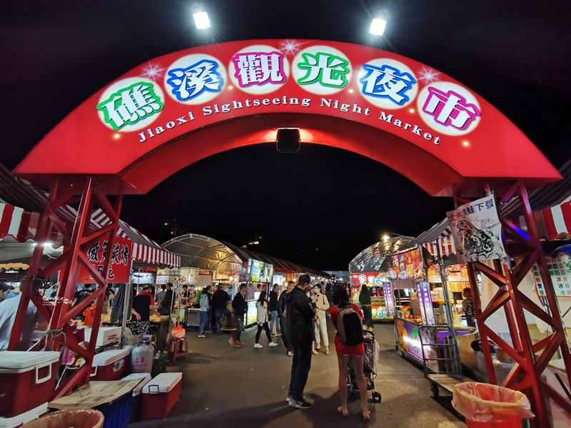
                <p>介紹:佔地五百多坪的夜市，讓你來礁溪除了泡溫泉，又多了一個新選項，那就是逛夜市大吃特吃啦！有烤玉米、海盜魷魚、麻油雞、牛排、青蛙下蛋，還有跟臉一樣大的雞排跟烤肉攤，當然，小孩喜愛的打彈珠與射氣球也都有</p>
                <p>地點：礁溪轉運站旁。宜蘭縣礁溪鄉礁溪路六段17號</p>
                <p>營業時間17：00－24：00/只有五、六、日營業</p>
                </div>
                <div data-role="collapsible">
                    <h3>礁溪浴場</h3>
                    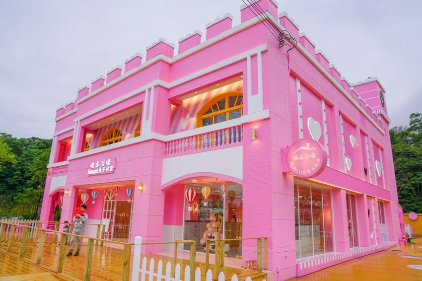
                <p>介紹:兔子迷宮充滿浪漫造景還有無敵宜蘭夜景，現在又有最新2.0版作品，礁溪浴場要美一波，園區每個角落都相當好拍，完全專為拍照而建，相信很快會成為宜蘭IG上打卡的最新人氣景點，就讓我們一起來看看礁溪浴場的魅力吧！</p>
                <p>電話：03-9887848</p>
                <p>地址：宜蘭縣礁溪鄉林美尾路42之9號</p>
                </div>
                <div data-role="collapsible">
                    <h3>斑比山丘</h3>
                    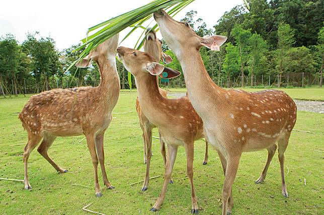
                <p>介紹:斑比山丘擁有一大群療癒小鹿，你可以盡情餵小鹿，或是跟鹿來場溫馨互動，天然萌的小鹿讓每個人心都融化，累了，就到美美子咖啡坐下來喝咖啡吃布丁，現在有線上預約可以多加利用喔～</p>
                <p>斑比山丘地址：宜蘭縣冬山鄉下湖路285號</p>
                <p>營業時間：上午10:00 – 下午17:00 </p>
                </div>
                <div data-role="collapsible">
                    <h3>鳩之澤</h3>
                    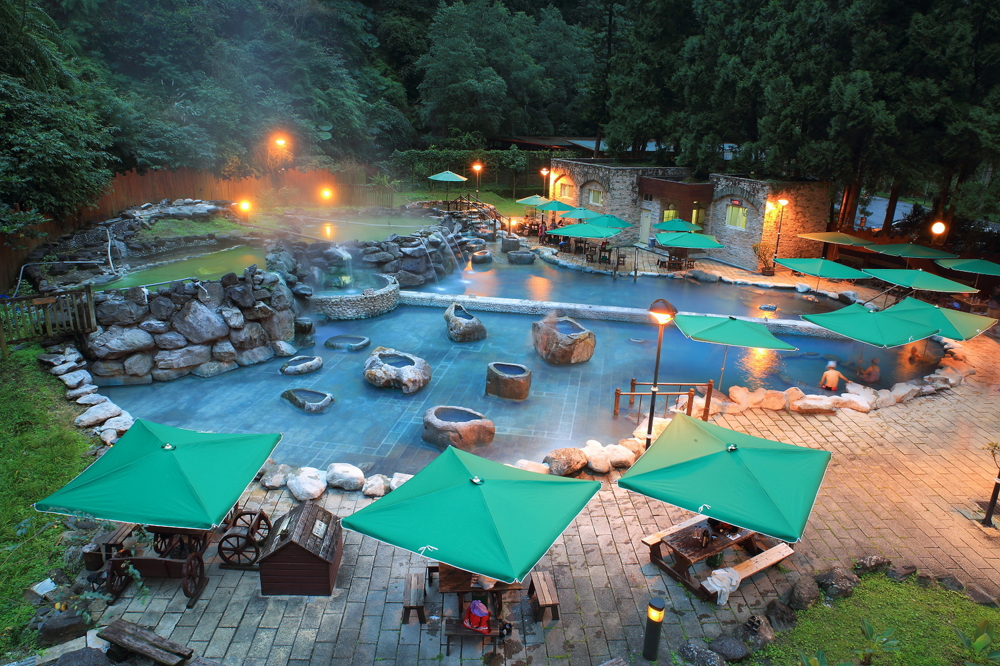
                <p>介紹:太平山煮蛋趣！鳩之澤溫泉煮蛋區全新開放！早早從飯店退房直奔太平山而來，因為小兔至從在清水地熱吃到好吃的溫泉蛋，就一直念念不忘用溫泉煮出來的滑嫩黃金蛋，所以囉～這趟就是要好好回味一番！</p>
                <p>地址:宜蘭縣大同鄉太平巷58之1號</p>
                <p>開放時間:06:00-20:00</p>
                <p>太平山園區門票平日150，假日200，並同時收取小客車清潔費100／機車20，</p>
                </div>
                <div data-role="collapsible">
                    <h3>渭水之丘</h3>
                    
                <p>介紹:站在山丘上無死角的眺望宜蘭平原美景，超特別空間歪斜迴廊更是美到快門按不停，而這裡距離天空好近，彷彿伸手就可拿到像棉花糖般的雲朵，</p>
                <p>地址:宜蘭縣礁溪鄉匏杓崙路139-1號</p>
                </div>
                <div data-role="collapsible">
                    <h3>天空島上的小木屋</h3>
                    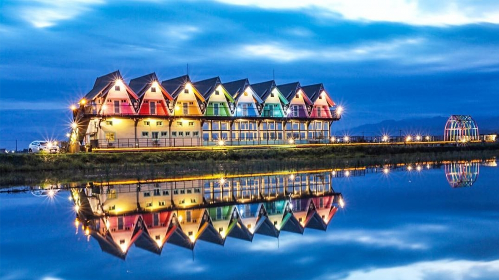
                <p>介紹:宜蘭超夯IG景點天空島上的小木屋，等待成熟的綠稻田配上一間間彩色小屋，彷彿來到國外景點一般美麗夢幻，這季節來天空島上的小木屋打卡正美！</p>
                <p>天空島上的小木屋地址：宜蘭縣礁溪鄉塭底路70之12號</p>
                </div>
                <div data-role="collapsible">
                    <h3>清水地熱</h3>
                    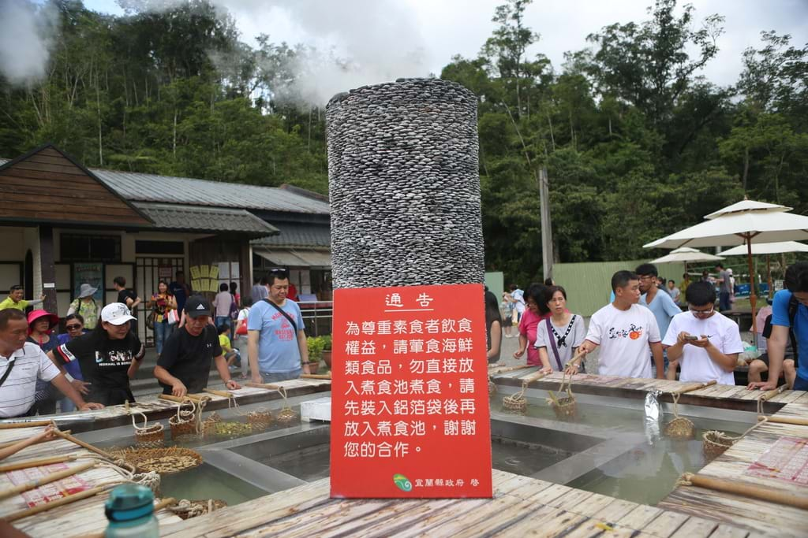
                <p>介紹:大夥能在天然溪谷中提著竹簍煮食物，不管是玉米、雞蛋、筊白筍、香菇雞都行！重點！還能享受暖呼呼的美人足湯～宜蘭清水地熱，超無敵的野餐景點來啦！！</p>
                <p>清水地熱地址：宜蘭縣大同鄉三星路八段501巷139號</p>
                <p>開放時間：09:00~17:00</p>
                </div>
                <div data-role="collapsible">
                    <h3>三奇伯朗大道</h3>
                    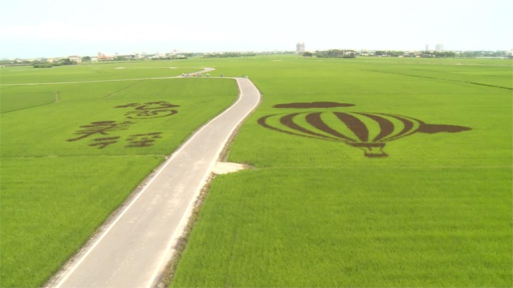
                <p>介紹:覺得台東伯朗大道太遠無法到達嗎？現在到六月底宜蘭的三奇伯朗大道正鮮綠！放眼看去無邊際油綠稻田美到像幅畫～最棒的是更架起三層樓高的眺望台，讓你不用空拍機就能秒收宜蘭伯朗大道綠色大地～</p>
                <p>宜蘭伯朗大道地址：宜蘭縣冬山鄉三奉路77號</p>
                </div>


                <h2>影片介紹:</h2>
                <div class="video-wrapper">
                <iframe width="560" height="315" src="https://www.youtube.com/embed/0PmjvoTpxno" frameborder="0" allow="accelerometer; autoplay; clipboard-write; encrypted-media; gyroscope; picture-in-picture" allowfullscreen></iframe>
                </div>
               

            </div>
            
        </div><!-- /content -->
        <div data-role="navbar">
            <ul>
                <li><a href="#page02" data-icon="bullets" class="ui-btn ui-icon-star ui-btn-icon-top" data-transition="pop">在地美食</a></li>
                <li><a href="#page03" data-icon="bullets" class="ui-btn ui-icon-heart ui-btn-icon-top" data-transition="pop">住宿飯店</a></li>
                <li><a href="#page04" data-icon="bullets" class="ui-btn ui-icon-location ui-btn-icon-top" data-transition="pop">交通資訊</a></li>
                <li><a href="#about" data-icon="bullets" data-transition="slidedown" class="ui-btn ui-icon-info ui-btn-icon-top" data-transition="pop">關於我們</a></li>
            </ul>
        </div>
        <div data-role="footer" data-position="fixed">
            <h4>copyright &copy; 2020 Wenzao DCAM Vicky</h4>

        </div><!-- /footer -->

    </div><!-- 特色景點 -->
    
    <!--第二分頁在地美食-->
    <div data-role="page" id="page02">

        <div data-role="header">
            <a href="#home" class="ui-btn ui-icon-home ui-btn-icon-notext ui-btn-corner-all">home</a>
            <h1>宜蘭輕鬆旅遊趣</h1>

        </div><!-- /header -->

        <div role="main" class="ui-content">

            <h2>~宜蘭美食懶人包~</h2>

            <div data-role="collapsibleset" data-theme="a" data-content-theme="a">
                <div data-role="collapsible">
                    <h3>魏姐包心粉圓</h3>
                    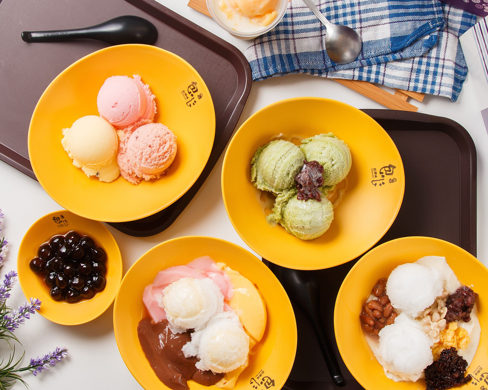
                <p>包心粉圓是宜蘭在地的特色甜點小食，是將萬丹紅豆包在粉圓裡頭，打造獨特的美味與口感。包心粉圓也會搭配花生或雪沙冰，多樣的口味與組合，讓包心粉圓的層次與享受更佳的多元，遍佈宜蘭的分店也讓你在需要一份甜蜜口感時都可以吃得到。</p>
                <p>地址：宜蘭縣羅東鎮羅莊街398號</p>
                <p>營業時間：08:00 – 17:00</p>
                </div>
                <div data-role="collapsible">
                    <h3>北門綠豆沙牛乳大王</h3>
                    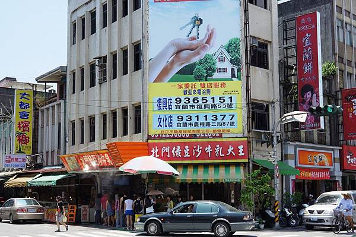
                <p>北門綠豆沙牛乳大王是宜蘭市區中山路上非常知名的必吃美食，最主打的綠豆沙牛乳非常的香純濃郁，綠豆沙打得非常的細緻綿密，許多人喝過都讚不絕口。除了綠豆沙牛乳以外，芋頭以及木瓜牛乳也都是非常推薦的選擇！
                </p>
                <p>地址：宜蘭市中山路三段208號</p>
                <p>營業時間：週三至週六 10:00 - 17:00</p>
                </div>
                <div data-role="collapsible">
                    <h3>正好鮮肉小籠包</h3>
                    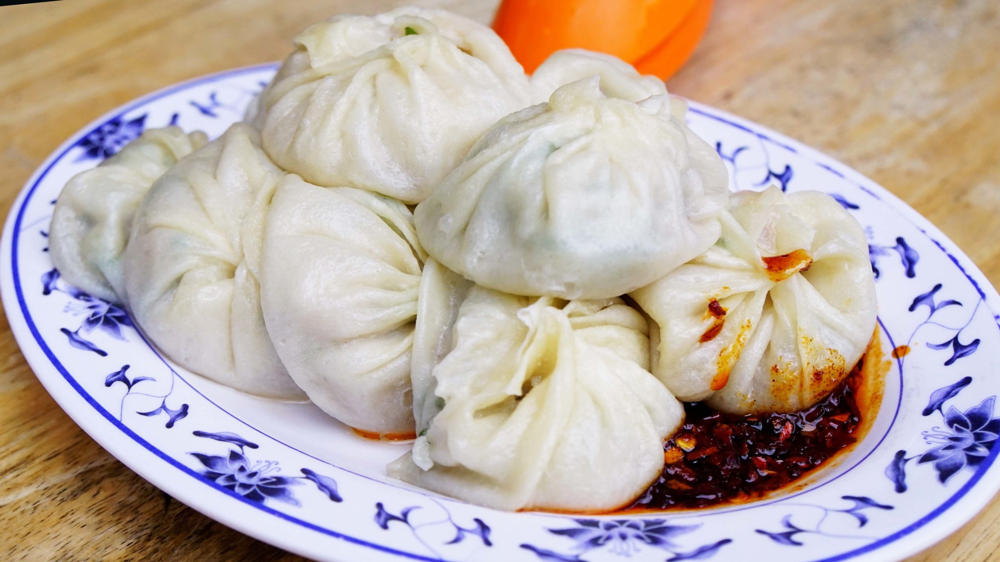
                <p>正好鮮肉小籠包也是許多人到宜蘭必吃的美食，湯包裡包有滿滿的三星蔥，另外的一大特色是外皮很薄，一口咬下，讓鮮甜的肉汁以及蔥香流溢於口中。除了小籠包以外，配上一碗酸辣湯，是許多人推薦的必吃組合！</p>
                <p>地址：宜蘭縣宜蘭市泰山路25-1號</p>
                <p>營業時間：週二至週日 10:00 - 15:00</p>
                </div>
                <div data-role="collapsible">
                    <h3>林場肉羹</h3>
                    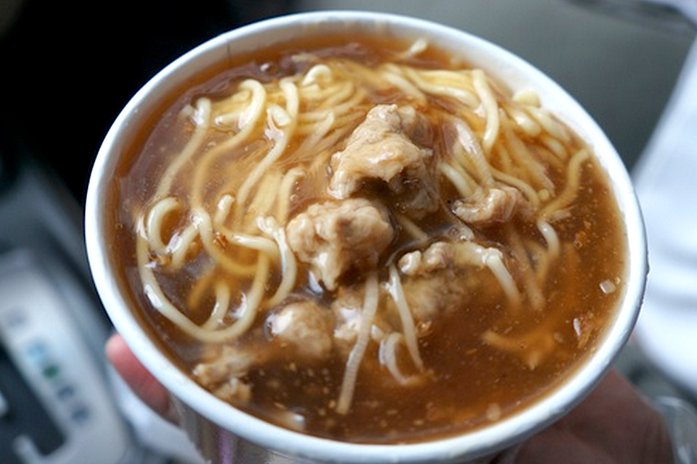
                <p>林場肉羹是位在羅東林場附近的五十年必吃老店，只賣一個品項「肉羹」，保留了非常傳統古早的美味，可以加麵或加飯加米粉。肉羹的量很多，可以吃出豬肉原本的口感與美味，羹湯也經過特別調製而帶點香甜，是非常暖心的一道傳統美食。</p>
                <p>地址：宜蘭縣羅東鎮中正北路109號</p>
                <p>營業時間：07:00 - 18:00 週三公休</p>
                </div>
                <div data-role="collapsible">
                    <h3>阿灶伯當歸羊肉</h3>
                    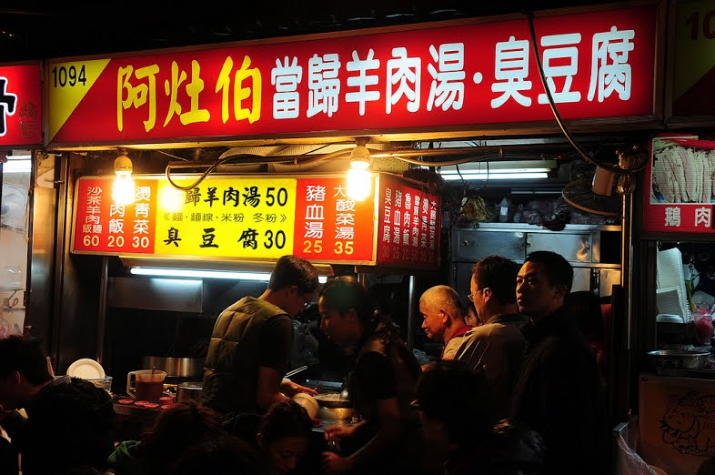
                <p>阿灶伯當歸羊肉是羅東夜市的知名排隊美食，也是編輯每次到羅東夜市都一定會吃的店家！推薦必點的就是當歸羊肉湯，羊肉鮮嫩而不腥，湯頭有當歸的香甜，非常推薦！另外臭豆腐也是許多人推薦的餐點。阿灶伯其實出餐速度很快，會排隊主要是因為座位有限，如果比較不怕麻煩，建議可以點外帶，到附近的公園坐著吃哦！</p>
                <p>地址：宜蘭縣羅東鎮民權路265號(羅東夜市)</p>
                <p>營業時間：16:00 - 01:00 週三公休</p>
                </div>
                <div data-role="collapsible">
                    <h3>羅東/小島日和</h3>
                    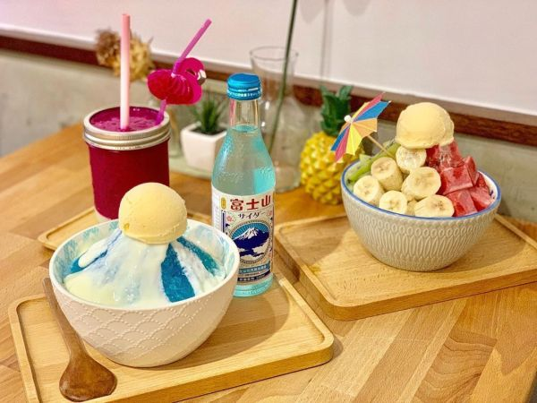
                <p>小島日和是近幾年在羅東開設的日式冰品店，小巧溫馨的店面，以花牆以及乾燥花作為裝飾，營造出輕柔舒服的用餐空間。店內以各種造型吸睛的水果冰品聞名，不只每一道都能夠po上IG打卡。除了外型，口味也是令人幸福感洋溢，來到羅東不妨用小島日和的冰品點綴你的宜蘭旅程吧！</p>
                <p>地址：宜蘭縣羅東鎮中山路三段208號</p> 
                <p>營業時間：週三至週日 12:00 - 20:00</p>
                </div>
                <div data-role="collapsible">
                    <h3>柯氏蔥油餅</h3>
                    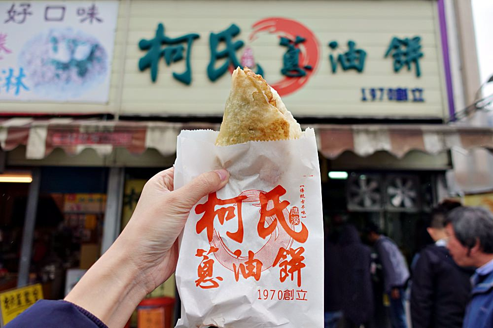
                <p>來到盛產蔥的宜蘭，蔥油餅當然是來宜蘭的必吃小吃！位在礁溪的柯氏蔥油餅，又可以說是宜蘭最為知名的一家蔥油餅店家，外皮金黃酥脆，咬起來蓬鬆Q彈有嚼勁，編輯最愛的組合是加蛋並刷上蒜味醬油，蛋香、蔥香和麵粉像一次在口中綻放，非常令人上癮！</p>
                <p>地址：宜蘭縣礁溪鄉礁溪路四段128號</p>
                <p>營業時間：09:00 - 18:15 週末至18:00</p>
                </div>
                <div data-role="collapsible">
                    <h3>白水豆花</h3>
                    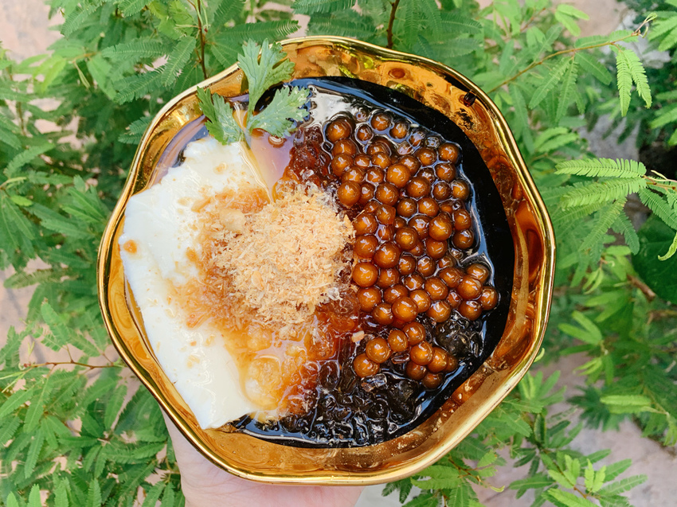
                <p>白水豆花是位於礁溪的一家豆花小店，以吃得出豆香的鹽滷豆花為主打，豆花上會灑上麥芽花生糖刨成的花生糖粉，吃起來更多了口感層次，也帶出另一種清甜香氣。除了豆花，店內擺設與使用的石器也都顯得精緻沈穩，是非常推薦來到礁溪必吃的宜蘭甜品小食。
                </p>
                <p>地址：宜蘭縣礁溪鄉德陽路68號</p>
                <p>營業時間：13:00 - 20:00/週三週四公休</p>
                </div>
                <div data-role="collapsible">
                    <h3>樂山溫泉拉麵</h3>
                    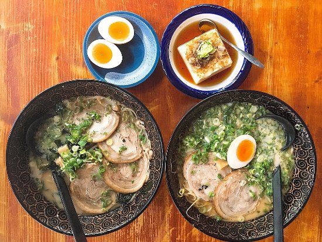
                <p>來到宜蘭溫泉鄉「礁溪」，邊泡腳邊吃拉麵是這裡最特別的用餐體驗！樂山拉麵提供泡腳池，讓你能夠一邊享受平價、美味的拉麵，一邊享受礁溪的溫泉。除了拉麵以外，也很推薦海鮮丼。建議冬天來到礁溪時，可以到樂山拉麵享受滿滿的暖意哦！</p>
                <p>地址：宜蘭縣礁溪鄉礁溪路五段108巷1號</p>
                <p>營業時間：11:30 - 14:00, 17:00 - 21:00</p>
                <p>價格 : 東京醬油拉麵 160$ /三星蔥拉麵 200$ /豚骨拉麵 150$ /厚切叉燒拉麵 230$ /起司可樂餅 120$ /日式炸豆腐 50$ /溫泉蛋 20$</p>
                </div>
                <div data-role="collapsible">
                    <h3>蒔花咖啡廳</h3>
                    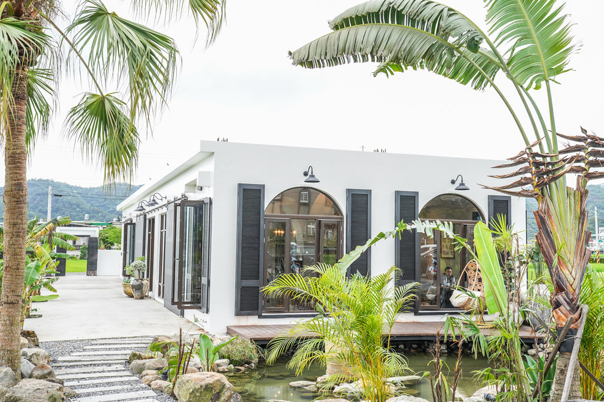
                <p>優雅的異國度假風情、伴隨著兩旁的椰子樹、石階、水池、搖椅，喜歡拍照、約會的情侶/夫妻和喜愛品嘗輕食的朋友們一定要收藏唷~目前google地址不正確，各位可以先搜尋盧森堡民宿，就會看到醒目的田間白色歐風小屋
                </p>
                <p>地址 : 宜蘭礁溪鄉十六結路23-17號 (盧森堡民宿旁</p>
                <p>營業時間 : 10:00 - 17:00/週二週三公休</p>
                </div>
                <div data-role="collapsible">
                    <h3>天ㄟ咖啡</h3>
                    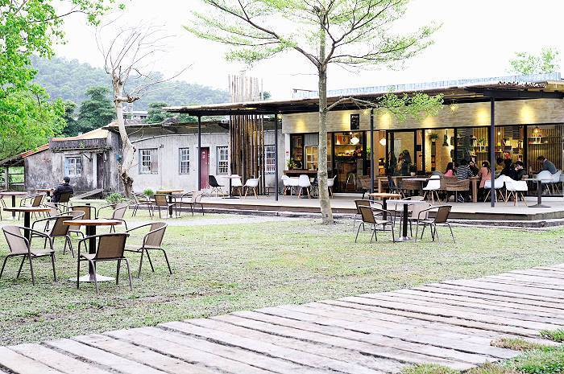
                <p>沒有過多的包裝與華麗的裝潢,整大片的草皮、綠樹與梅花湖融為一體,真正能享受湖光水色的地方。天ㄟ咖啡的建築物是舊屋翻新而成,咖啡館是老板的藝術家朋友所設計,藝術家的綽號叫 “天ㄟ” 咖啡館因此命名</p>
                <p>宜蘭縣冬山鄉大埤二路75巷26號</p>
                <p>營業時間：08:00 - 19:00</p>
                </div>
                <div data-role="collapsible">
                    <h3>老婆吃鍋</h3>
                    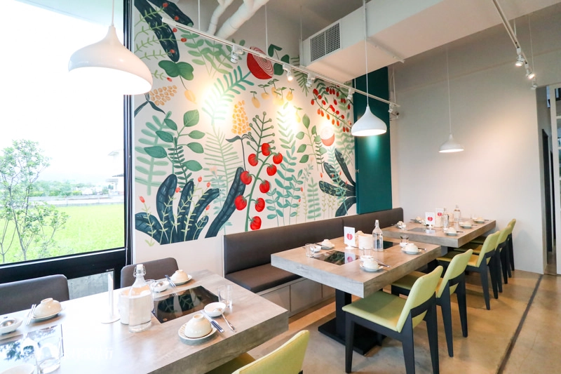
                <p>老婆吃鍋是一家別墅型的鍋物餐廳! 寬敞舒適的用餐空間，停車空間豐富，餐點也都不錯 ! 特別是用餐氣氛真的滿好的，而且用餐的過程中，不管是醬料還是餐後的甜品，都讓人讚譽有加，可說是內外皆美的鍋物餐廳啊</p>
                <p>地址：宜蘭縣宜蘭市環市東路二段680號</p>
                <p>營業時間 : 11:30–15:00, 17:30–21:30</p>
                </div>
                <div data-role="collapsible">
                    <h3>奶酥人</h3>
                    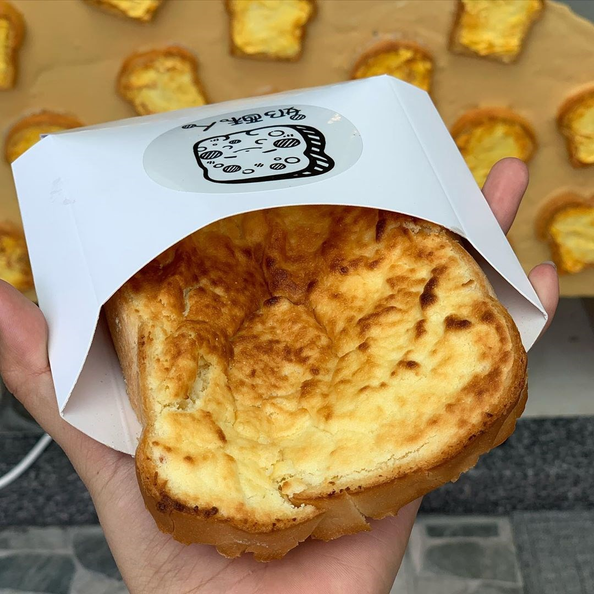
                <p>在這生吐司當紅的時代，各地許多吐司、果醬專賣店也漸漸人氣高漲，而這間位在宜蘭頭城的「奶酥人」，一直以來都是超夯的網購美食。近期奶酥人正式開幕店面，除了販售熱門奶酥醬之外，還有販售現烤奶酥厚片，經常開門營業三小時就完售，非常有人氣</p>
                <p>店家嚴選法國AOP產區頂級發酵奶油、紐西蘭優質奶粉以及日本上白糖，製作出天然又美味的奶酥醬，塗抹在鬆軟吐司上烘烤，吐司外酥內軟，每一口還吃得到奶酥香濃滋味，實在是太幸福了～</p>
                <p>地址：宜蘭縣頭城鎮青雲路三段89號1樓</p>
                <p>營業時間：週五到週日 13:00-售完為止（約15:00售完）</p>
                </div>
                <div data-role="collapsible">
                    <h3>羊陶</h3>
                    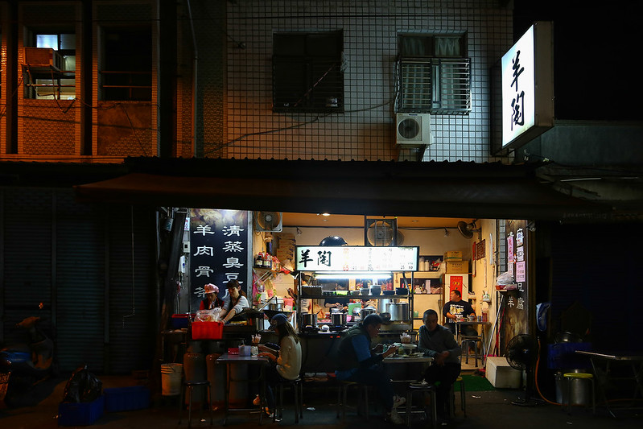
                <p>「羊陶」位於宜蘭市新月廣場附近，餐點主打是當歸羊肉湯，以及炸臭豆腐，店家的羊肉湯12種中藥材跟羊大骨的熬煮下喝起來湯頭較為甘甜卻不油膩，湯裡的羊肉薄片在口感上也讓人忍不住一口接著一口；而炸臭豆腐更是店內客人最愛，以中藥材及青草汁去做天然的發酵，因此雖然名為臭豆腐
                </p>
                <p>地址：宜蘭縣宜蘭市舊城北路186號</p>
                <p>時間：17：00-00：30/週二休息</p>
                <p>價格：當歸羊肉片湯 $75 /麻辣鴨血 $80 /炸臭豆腐 $50 /滷肉飯 $35</p>
                </div>
                <div data-role="collapsible">
                    <h3>漢臣商號</h3>
                <p>漢臣商號是一家什麼都賣的飲料店，最有名的莫過於他們的水煎包，他們的高麗菜肉的口味，煎包底部是煎得酥酥脆脆的，不油不膩超清爽。店外面的外觀採用白色調文青風，另外，他們戶外還有大理石桌子可以拍外,旁邊也有嫩葉和背景牆可以拍美美,是一間宜蘭在地網美店，很好拍照~</p>
                <p>地址：宜蘭市農權路100號</p>
                <p>營業時間：11:00~21:00</p>
                </div>
                
                <h2>影片介紹更多美食:</h2>
                <div class="video-wrapper">
                <iframe width="560" height="315" src="https://www.youtube.com/embed/P6zl08v9vbQ" frameborder="0" allow="accelerometer; autoplay; clipboard-write; encrypted-media; gyroscope; picture-in-picture" allowfullscreen></iframe>
                </div>
               
                
            </div>

        </div><!-- /content -->
        <div data-role="navbar">
            <ul>
                <li><a href="#page01" data-icon="bullets" class="ui-btn ui-icon-star ui-btn-icon-top" data-transition="pop">特色景點</a></li>
                <li><a href="#page03" data-icon="bullets" class="ui-btn ui-icon-heart ui-btn-icon-top" data-transition="pop">住宿飯店</a></li>
                <li><a href="#page04" data-icon="bullets" class="ui-btn ui-icon-location ui-btn-icon-top" data-transition="pop">交通資訊</a></li>
                <li><a href="#about" data-icon="bullets" data-transition="slidedown" class="ui-btn ui-icon-info ui-btn-icon-top" data-transition="pop">關於我們</a></li>
            </ul>
        </div>
        <div data-role="footer" data-position="fixed">
            <h4>copyright &copy; 2020 Wenzao DCAM Vicky</h4>

        </div><!-- /footer -->

    </div><!-- 在地美食 -->

    <!--第三分頁住宿飯店-->
    <div data-role="page" id="page03">

        <div data-role="header">
            <a href="#home" class="ui-btn ui-icon-home ui-btn-icon-notext ui-btn-corner-all">home</a>
            <h1>宜蘭輕鬆旅遊趣</h1>

        </div><!-- /header -->

        <div role="main" class="ui-content">

            <h2>~宜蘭住宿懶人包~</h2>

            <div data-role="collapsibleset" data-theme="a" data-content-theme="a">
                <div data-role="collapsible">
                    <h3>花田溫泉湯屋</h3>
                
                <p>民宿樓下就是湯圍溝公園，是一個免費泡腳公園，晚上是夜市，對面巷子穿過去，就是舊街菜市場，湯圍溝公園口有7-11。</p>
                <p>入住時間:15:00 - 22:00 / 退房時間:11:00</p>
                <p>地址:宜蘭縣礁溪鄉 (自行google)</p>
                <p>價格:請上網觀看各大住宿網站</p>
                </div>
                <div data-role="collapsible">
                    <h3>湯圍日式溫泉民宿</h3>
                
                <p>新開幕「湯圍日式溫泉宿舍」位於最熱鬧的礁溪舊路和中山路之間，從礁溪火車站或溫泉溝公園走過來約3分鐘。附近就是礁溪有名的樂山拉麵、奕順軒、魚丸米粉、八寶冬粉、阿和燒烤、正常小龍包等。房間採用原木打造，日式簡約風格，泡湯時可以聞到原木的清香。</p>
                <p>入住時間：15:00 以後/退房時間：早上11:00 以前</p>
                <p>地址:宜蘭縣礁溪鄉(自行google)</p>
                <p>價格:請上網觀看各大住宿網站</p>
                </div>
                <div data-role="collapsible">
                    <h3>羅東夢行館(可包棟)</h3>
                
                <p>輕北美loft設計走向 如同外來移民的小城市 展現異國風情美感 獨到生活品味</p>
                <p>入住時間:15:00 - 23:30 / 退房時間:11:00</p>
                <p>地址:宜蘭縣羅東鎮(自行google)</p>
                <p>價格:請上網觀看各大住宿網站</p>
                </div>
                <div data-role="collapsible">
                    <h3>礁溪自然風溫泉會館 / 獨立泡澡池</h3>
                
                <p>放慢您的步調、放鬆您的感觀神經、享受漫活中的無比輕鬆，遠離都市的塵囂，藉由溫暖的泉湯來舒緩生活中的疲憊 。</p>
                <p>自然風溫泉會館，位於礁溪寧靜的山腳下，避開熙來攘往的街道，喧鬧的環境，群山擁抱眺望龜山島，映入眼簾的盡是大片綠意的鄉野風光，徜徉在如此自然慢活的生活環境中，踩踏自行車的悠然愜意、泡泡溫泉的舒暢放鬆，令人不自然愛上這微妙卻無比的幸福時光。</p>
                <p>入住時間：15:00 - 00:00/退房時間：早上11:00 以前</p>
                <p>地址:宜蘭縣礁溪鄉(自行google)</p>
                <p>價格:請上網觀看各大住宿網站</p>
                </div>
                <div data-role="collapsible">
                    <h3>禾風彩魚會館</h3>
                
                <p>禾風彩魚的熱情招待 就是禾風彩魚的初衷理念 飛越彩虹 躍過水面 慢活生活 築夢到達彼岸 這將會是永生難忘的旅程。</p>
                <p>入住時間：15:00 - 23:00/退房時間：早上11:00 以前</p>
                <p>地址:宜蘭縣壯圍鄉(自行google)</p>
                <p>價格:請上網觀看各大住宿網站</p>
                </div>
                <div data-role="collapsible">
                    <h3>樹之屋民宿</h3>
                    
                <p>來到鄉間小路中佇立的樹屋 純樸風情，視野寬敞 田野鄉風，綠野稻海 鳥語花香，遠離塵囂 古麝古香，溫馨雅築 有如倦鳥歸巢般的輕鬆感 放慢腳步貼近大自然 黃昏撒在青色的稻田閃閃發亮 隨著夜晚星空輕風徐徐吹來 在大自然的洗禮下進入夢鄉 再邁開你另一段人生的旅程~~</p>
                <p>入住時間：16:00 - 22:00/退房時間：早上11:00 以前</p>
                <p>地址:宜蘭縣五結鄉(自行google)</p>
                <p>價格:請上網觀看各大住宿網站</p>
                </div>
                <div data-role="collapsible">
                    <h3>光之旅</h3>
                    
                <p>位於風景優美的蘇澳鎮地區，從BRIGHTHOUSE可俯瞰宜蘭縣，是享受餐飲, 海灘, Spa的絕佳選擇。 在這裡，旅客可輕鬆前往市區內各大旅遊、購物、餐飲地點。 住宿位置優越讓旅客前往市區內的熱門景點變得方便快捷。</p>
                <p>入住時間：15:00 以後/退房時間：早上11:00 以前</p>
                <p>地址:宜蘭縣蘇澳鎮跨港路1號</p>
                <p>價格:請上網觀看各大住宿網站</p>
                </div>
                <div data-role="collapsible">
                    <h3>礁溪寒沐酒店</h3>
                    
                <p>體驗高質感的舒適休憩空間，部分客房配有平面電視, 開放式衣櫥, 更衣室, 保險箱, 室內拖鞋，讓您回房之後能好好地放鬆休息。 不管您是健身愛好者還是只想在疲憊的一天後放鬆一下自己，住宿的頂級娛樂設施都是不二選擇，例如：健身房, 溫泉, 室外游泳池, 兒童遊戲室。 不管您是哪一種類型的旅客，礁溪寒沐酒店都是來宜蘭縣的理想下榻住宿。</p>
                <p>入住時間：15:00 以後/退房時間：早上11:00 以前</p>
                <p>地址:宜蘭縣礁溪鄉健康路1號</p>
                <p>價格:請上網觀看各大住宿網站</p>
                </div>
                <div data-role="collapsible">
                    <h3>蘭城晶英酒店 </h3>
                    
                <p>從蘭城晶英酒店可俯瞰宜蘭，是享受餐飲美食, 觀光, 家庭娛樂設施的絕佳選擇。 在這裡，旅客們可輕鬆前往市區內各大旅遊、購物、餐飲地點。 這間酒店氣氛閒適安逸，而且離市區宜蘭酒廠, 嘉智蘭酒博物館, 宜蘭政府成立紀念館等景點僅數步之遙。</p>
                <p>入住時間：15:00 以後/退房時間：早上11:00 以前</p>
                <p>地址:宜蘭縣民權路二段36號</p>
                <p>價格:請上網觀看各大住宿網站</p>
                </div>
            </div>       
        
        </div><!-- /content -->
   
        <div data-role="footer" data-position="fixed">
            <h4>copyright &copy; 2020 Wenzao DCAM Vicky</h4>
            <div data-role="navbar">
                <ul>
                    <li><a href="#page01" data-icon="bullets" class="ui-btn ui-icon-star ui-btn-icon-top" data-transition="pop">特色景點</a></li>
                    <li><a href="#page02" data-icon="bullets"  class="ui-btn ui-icon-heart ui-btn-icon-top" data-transition="pop">在地美食</a></li>
                    <li><a href="#page04" data-icon="bullets" class="ui-btn ui-icon-location ui-btn-icon-top" data-transition="pop">交通資訊</a></li>
                    <li><a href="#about" data-icon="bullets" data-transition="slidedown" class="ui-btn ui-icon-info ui-btn-icon-top" data-transition="pop">關於我們</a></li>
                </ul>
            </div>
        </div>
        

    </div><!-- /footer -->

    </div><!-- 住宿飯店 -->

    <!--第四分頁交通資訊-->
    <div data-role="page" id="page04">

        <div data-role="header">
            <a href="#home" class="ui-btn ui-icon-home ui-btn-icon-notext ui-btn-corner-all">home</a>
            <h1>宜蘭輕鬆旅遊趣</h1>

        </div><!-- /header -->

        <div role="main" class="ui-content">

            <h2>宜蘭交通資訊</h2>
            <h3>1.公車:</h3>
                 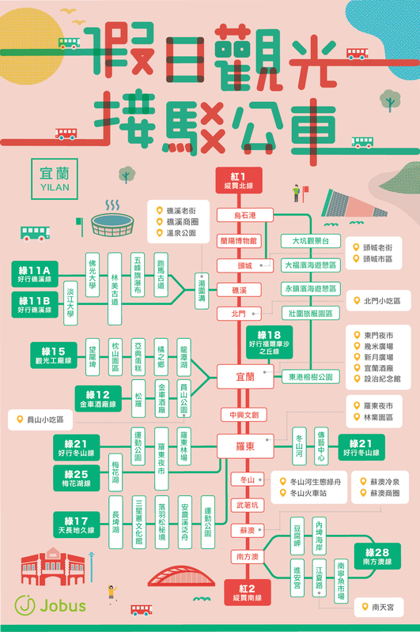
            <p>Jobus 很用心繪製這張公車路線地圖，看了這張完全就能按圖探索，一目瞭然看哪些景點是你想去的，就搭哪一條路線的公車！</p>
            <p>宜蘭假日觀光接駁公車「2紅9綠」路線</p>
            <p>基本上是以紅線為南北縱走幹線，綠線為各主題旅遊支線，連接各大宜蘭景點​</p>
            <p>紅 1    – 縱貫北線</p>    
            <p> 紅 2   – 縱貫南線</p>
            <p>綠11A   - 好行礁溪線</p>
            <p>綠11B   - 好行礁溪線</p>
            <p>綠12    - 金車酒廠線</p>
            <p>綠15    - 觀光工廠線</p>
            <p>綠17    - 天長地久線</p>
            <p>綠18    - 好行福爾摩沙之丘線</p>
            <p>綠21    - 好行冬山線</p>
            <p> 綠25   - 梅花湖線</p>
            <p>綠28    - 南方澳線</p>   
            <b>------分隔線------</b>
            <h3>2.開車</h3>
            <p>(1)【北宜公路】山線</p>
            <p>台北－新店－台9線(北宜公路)－宜蘭</p>    
            <p>途經坪林，有金瓜寮步道、茶葉博物館等，一路山林美景。</p>
            <p>(2)【濱海公路】海線</p>
            <p>台北－國1/國3－基隆－台2線(濱海公路)－宜蘭 途經福隆、龍洞、鼻頭角、南雅奇石等，一路碧海藍天。</p> 
            <p>3. 【基福公路】山海線</p>
            <p>台北－國1/國3－暖暖－台2丙(基福公路)－福隆－台2線(濱海公路)－宜蘭 路面寬平，可同時欣賞山與海的景致。</p>
            <b>------分隔線------</b>
            <h3>3.坐火車</h3>
            <p>搭乘台鐵東部幹線及東部區間列車-宜蘭線即可</p>

        </div><!-- /content -->
        <div data-role="navbar">
            <ul>
                <li><a href="#page01" data-icon="bullets" class="ui-btn ui-icon-star ui-btn-icon-top" data-transition="pop">特色景點</a></li>
                <li><a href="#page02" data-icon="bullets"  class="ui-btn ui-icon-heart ui-btn-icon-top" data-transition="pop">在地美食</a></li>
                <li><a href="#page03" data-icon="bullets" class="ui-btn ui-icon-location ui-btn-icon-top" data-transition="pop">住宿飯店</a></li>
                <li><a href="#about" data-icon="bullets" data-transition="slidedown" class="ui-btn ui-icon-info ui-btn-icon-top" data-transition="pop">關於我們</a></li>
            </ul>
        </div>
        <div data-role="footer" data-position="fixed">
            <h4>copyright &copy; 2020 Wenzao DCAM Vicky</h4>

        </div><!-- /footer -->

    </div><!-- 交通資訊 -->

    <!-- 第五分頁關於我們 -->
    <div data-role="page" id="about" data-dialog="true">

        <div data-role="header">
            <a href="#home" class="ui-btn ui-icon-home ui-btn-icon-notext ui-btn-corner-all">home</a>
            <h1>宜蘭輕鬆旅遊趣</h1>

        </div><!-- /header -->

        <div role="main" class="ui-content">

            <h3>關於我們</h3>
            <p>宜蘭好去處懶人包~幫大家彙整了~可以方便閱讀</p>
            <p>如果喜歡我們的文章歡迎按讚訂閱</p>
            <p>此網站裡照片僅供教學用，非商業性質。圖片皆出自網路</p>

            <u1>
                <li><a href="#page01">特色景點</a></li>
                <li><a href="#page02">在地美食</a></li>
                <li><a href="#page03">住宿飯店</a></li>
                <li><a href="#page04">交通資訊</a></li>
            </u1>

        </div><!-- /content -->

        <div data-role="footer" data-position="fixed">
            <h4>copyright &copy; 2020 Wenzao DCAM Vicky</h4>

        </div><!-- /footer -->

    </div><!-- 關於我們 -->

</body>

</html>

